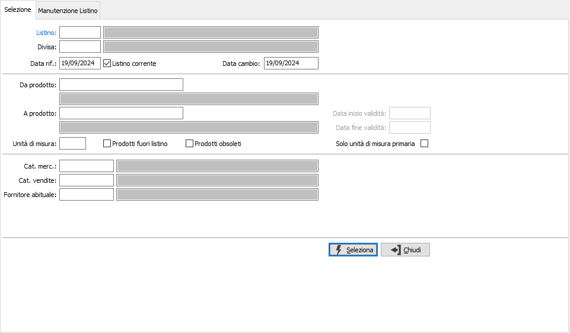
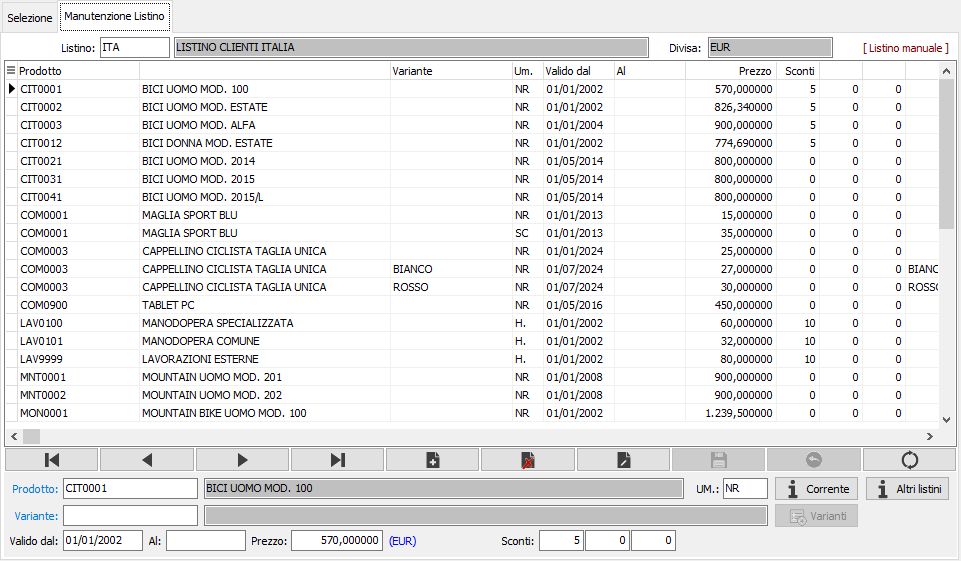
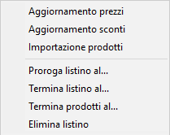
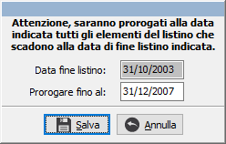
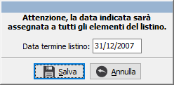
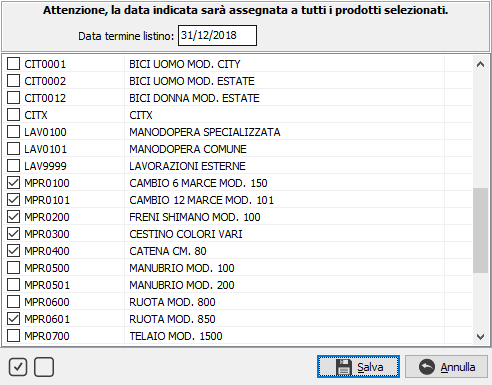
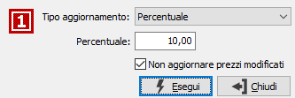
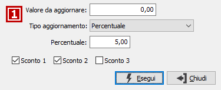
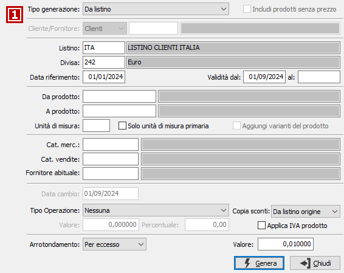

Manutenzione listini prodotti
Il programma è necessario per l'inserimento e la successiva manutenzione di tutti i dati relativi ai listini prezzi dei prodotti, nelle varie unità di misura coerenti con i prodotti stessi.
La manutenzione si struttura in due finestre (linguette), una prima che si utilizza per l'indicazione del listino, della sua tipologia e la selezione, secondo criteri specifici, dei prodotti da inserire o modificare; una seconda finestra per la vera e propria definizione della validità e manutenzione dei prezzi del listino stesso.
Selezione

LISTINO: indica il codice del listino per cui si vuole effettuare la manutenzione. L'inserimento del campo è obbligatorio. Sul campo sono attive le funzioni di ricerca (F9).
DIVISA: indica il codice della divisa per cui si vuole effettuare la manutenzione del listino richiesto. L'inserimento del campo è obbligatorio. Sul campo sono attive le funzioni di ricerca (F9). Nel caso in cui la combinazione listino-divisa non abbia alcun dato associato è possibile generare il listino con un metodo analogo all'Importazione dei prodotti (vedi paragrafo successivo).
DATA RIFERIMENTO: definisce la data, tramite cui ricercare i prezzi all'interno del listino. Saranno disponibili per la manutenzione solo i prodotti le cui date di validità comprendono, come periodo, la data di riferimento.
LISTINO CORRENTE: indica di utilizzare il listino corrente, quello valido alla data di sistema (casella con segno di spunta).
DATA CAMBIO: definisce la data del cambio da utilizzare, al salvataggio finale del listino, per eventuali aggiornamenti di listini collegati in diversa divisa; viene proposta la data di sistema. Il cambio viene ricercato nella tabella cambi listini e se non presente alla data specificata sarà ricercato alla data più recente rispetto alla data specificata
DA PRODOTTO: eventuale codice dell'articolo, presente in anagrafica Prodotti, da cui si desidera iniziare la selezione. Confermando a vuoto, la selezione inizia con il primo prodotto valido. Sul campo sono attive le funzioni di ricerca (F9).
A PRODOTTO: eventuale codice dell'articolo, presente in anagrafica Prodotti, con cui si desidera terminare la selezione. Confermando a vuoto, la selezione termina con l’ultimo valido. Sul campo sono attive le funzioni di ricerca (F9).
UNITà di misura: codice relativo alla tabella unità di misura da utilizzare come filtro per la visualizzazione dei prezzi sul listino o la selezione degli articoli fuori listino; questo parametro è alternativo a "Solo unità di misura primaria". Sul campo sono attive le funzioni di ricerca (F9).
PRODOTTI FUORI LISTINO: definisce se includere nella manutenzione anche quei prodotti, nei limiti dei due campi precedenti, che non fanno ancora parte del listino (casella con segno di spunta).
PRODOTTI OBSOLETI: definisce se includere nella manutenzione anche quei prodotti, nei limiti dei due campi precedenti, che risultano obsoleti (casella con segno di spunta).
Solo unità di misura primaria: se spuntato sarà applicato un filtro sulla selezione dei prodotti nel listino, oppure dei prodotti fuori listino, per includere solo i prodotti nella loro unità di misure primaria; questo parametro è alternativo a "Unità di misura".
DATA INIZIO VALIDITÀ: utilizzata nel caso di spunta del campo precedente, definisce la data di inizio validità da inserire sui prodotti aggiunti al listino.
DATA FINE VALIDITÀ: utilizzata nel caso di spunta del campo precedente, definisce la data di fine validità da inserire in automatico sui prodotti aggiunti al listino.
CATEGORIA MERCEOLOGICA: eventuale codice della categoria merceologica, riferita ai prodotti, per cui effettuare la selezione. Sul campo sono attive le funzioni di ricerca (F9). Il campo viene controllato anche quando nel listino si inserisce un prodotto nuovo; il controllo non è bloccante.
CATEGORIA DI VENDITA: eventuale codice della categoria di vendita, riferita ai prodotti, per cui effettuare la selezione. Sul campo sono attive le funzioni di ricerca (F9). Il campo viene controllato anche quando nel listino si inserisce un prodotto nuovo; il controllo non è bloccante.
FORNITORE ABITUALE: eventuale codice del fornitore abituale, riferito ai prodotti, per cui effettuare la selezione. Sul campo sono attive le funzioni di ricerca (F9). Il campo viene controllato anche quando nel listino si inserisce un prodotto nuovo; il controllo non è bloccante.
Manutenzione
In questa sezione è possibile effettuare la manutenzione dei dati selezionati dal listino, inserire manualmente nuovi prodotti, o prodotti già presenti in altre unità di misure (sempre compatibili col prodotto stesso), variare il prezzo di prodotti esistenti e cancellarli. E' da notare che se il listino deriva da un altro cioè è collegato tramite le regole di aggiornamento (solo per listini di vendita), compare a destra in alto l'informazione "Listino derivato", altrimenti viene visualizzato "Listino manuale"; per i listini derivati non è possibile effettuare l'importazione prodotti. Sulle righe sono presenti due pulsanti informativi relativi alla presenza del prodotto corrente in altri listini o in altri periodi.

PRODOTTO: codice dell'articolo, presente in anagrafica Prodotti, per cui modificare il prezzo del listino. Sul campo sono attive le funzioni di ricerca (F9) ed accesso rapido (CTRL+W).
unità di misura: codice dell'unità di misura, relativa a quelle previste per il prodotto, a cui fa riferimento il prezzo del listino. Sul campo sono attive le funzioni di ricerca (F9).
VALIDO DAL': definisce la data di inizio validità del prezzo per il prodotto, campo obbligatorio, non modificabile.
AL: definisce la data di fine validità del prezzo per il prodotto. Se non specificata s'intende sempre valido a partire dalla data inizio validità; il campo non è modificabile.
PREZZO: prezzo relativo al prodotto nelle date di validità indicate.
SCONTI O MAGGIORAZIONI: campi, abilitati o meno in relazione al numero sconti previsto in configurazione, per inserire una percentuale di sconto o maggiorazione relativa al prodotto nelle date di validità indicate.
Se attiva la gestione dei prezzi per variante in configurazione, è presente il campo Variante e l'omonimo bottone utilizzabili se il prodotto gestisce le varianti. In caso di variante vuota il bottone si attiva e se premuto visualizza le varianti del prodotto con la possibilità di selezionare quelle da includere nel listino, le varianti vengono incluse, se non già presenti, con le stesse caratteristiche del rigo di partenza, ma senza prezzo e senza sconti; alla registrazione saranno salvate solo quelle per cui sono stati inseriti prezzi o sconti.

Proroga listino al...

La finestra richiede la data fino a cui prorogare il listino, la data sarà assegnata a tutti gli elementi del listino; il salvataggio, previa doppia conferma, è definitivo.
Termina listino al...

La finestra richiede la data a cui deve essere terminato il listino, la data sarà assegnata a tutti gli elementi del listino; il salvataggio, previa doppia conferma, è definitivo.
Termina prodotti al...

La finestra richiede la data di termine e consente di selezionare i prodotti presenti nel listino, in basso a destra sono presenti i pulsanti per selezionare e deselezionare tutti i prodotti; la data sarà assegnata a tutti i prodotti selezionati del listino; il salvataggio, previa doppia conferma, è definitivo.
Aggiornamento prezzi

La finestra di Aggiornamento richiede se effettuare un aggiornamento in percentuale oppure a valore ed la relativa percentuale o valore per aggiornare i prezzi. Il check box 'Non aggiornare prezzi modificati' definisce se l'aggiornamento deve riguardare anche i prodotti per cui è stato già modificato manualmente il prezzo.
Aggiornamento sconti

La finestra di Aggiornamento richiede se effettuare un aggiornamento in percentuale oppure a valore ed la relativa percentuale o valore per aggiornare gli sconti. è possibile specificare un eventuale valore di raffronto per sostituzioni mirate: ad esempio tutte le percentuali 5 diventano 7,5; è anche possibile indicare quali sconti aggiornare apponendo le apposite spunte sulle caselle presenti in basso.
La finestra di Importazione prodotti viene richiamata sia dal menù di manutenzione, sia in fase di selezione se il listino-divisa richiesto non contiene nessun elemento.

TIPO GENERAZIONE: definisce il metodo di generazione dei nuovi dati nel listino. Valori possibili: prezzo di vendita, costo di mercato, costo ultimo carico, prezzo medio di carico, da listino, da listino speciale; in base al criterio selezionato saranno attivi i criteri e le opzioni relative.
INCLUDI PRODOTTO SENZA PREZZO: attivo solo per le generazioni che non derivano da listini o prezzi speciali, consente di includere i prodotti che hanno un valore zero relativamente al prezzo selezionato come criterio di generazione (casella con segno di spunta).
CLIENTE/FORNITORE: attivo solo per generazione da listino speciale; indica il tipo ed il codice del conto da cui effettuare la generazione. Sul campo sono attive le funzioni di ricerca (F9).
LISTINO: attivo solo per generazione da listino; indica il codice del listino da cui si vuole effettuare la generazione. Sul campo sono attive le funzioni di ricerca (F9).
DIVISA: attivo solo per generazione da listino e da listino speciale; indica il codice della divisa da cui si vuole effettuare la generazione, per il listino richiesto. Sul campo sono attive le funzioni di ricerca (F9).
DATA RIFERIMENTO: attivo solo per generazione da listino e da listino speciale; definisce la data, tramite cui ricercare i prezzi all'interno dell'eventuale listino di base. Saranno elaborati solo i prodotti le cui date di validità comprendono, come periodo, la data di riferimento.
VALIDITÀ DAL: definisce la data di inizio validità da inserire sui prodotti aggiunti al listino.
VALIDITÀ AL: definisce la data di fine validità da inserire in automatico sui prodotti aggiunti al listino.
DA PRODOTTO: eventuale codice dell'articolo, presente in anagrafica Prodotti, da cui si desidera iniziare la selezione. Confermando a vuoto, la selezione inizia con il primo prodotto valido. Sul campo sono attive le funzioni di ricerca (F9).
A PRODOTTO: eventuale codice dell'articolo, presente in anagrafica Prodotti, con cui si desidera terminare la selezione. Confermando a vuoto, la selezione termina con l’ultimo valido. Sul campo sono attive le funzioni di ricerca (F9).
UNITà di misura: attivo solo per generazione da listino e da listino speciale; codice relativo alla tabella unità di misura da utilizzare come filtro per la selezione dei prezzi del listino di origine; questo parametro è alternativo a "Solo unità di misura primaria". Sul campo sono attive le funzioni di ricerca (F9).
Solo unità di misura primaria: attivo solo per generazione da listino e da listino speciale; se spuntato sarà applicato un filtro sulla selezione dei prodotti nel listino di origine per includere solo i prodotti nella loro unità di misure primaria; questo parametro è alternativo a "Unità di misura".
AGGIUNGI VARIANTI DEL PRODOTTO: la casella è visibile solo se attiva la gestione dei prezzi per variante in configurazione e abilitata solo se si seleziona la generazione da costo ultimo carico o prezzo medio di carico; in questi casi la ricerca del prezzo avviene esclusivamente per variante specifica, non viene utilizzato il prezzo del solo prodotto se non viene trovato nessun valore per la variante.
CATEGORIA MERCEOLOGICA: eventuale codice della categoria merceologica, riferita ai prodotti, per cui effettuare la selezione. Sul campo sono attive le funzioni di ricerca (F9).
CATEGORIA DI VENDITA: eventuale codice della categoria di vendita, riferita ai prodotti, per cui effettuare la selezione. Sul campo sono attive le funzioni di ricerca (F9).
FORNITORE ABITUALE: eventuale codice del fornitore abituale, riferito ai prodotti, per cui effettuare la selezione. Sul campo sono attive le funzioni di ricerca (F9).
DATA CAMBIO: attivo solo per generazione da listino e da listino speciale quando la divisa è diversa dalla divisa del listino di destinazione; definisce la data del cambio da utilizzare per la conversione del prezzo del listino origine; il cambio viene ricercato nella tabella cambi listini e se non presente alla data specificata sarà ricercato alla data più recente rispetto alla data specificata.
TIPO OPERAZIONE: definisce un'eventuale operazione da compiere sul prezzo del prodotto; valori possibili: nessuna, divisione per valore costante, moltiplicazione per valore costante, percentuale di incremento/decremento, valore assoluto.
VALORE: indica il valore con cui effettuare l'operazione richiesta; è alternativo alla percentuale.
PERCENTUALE: indica la percentuale con cui effettuare l'operazione richiesta; è alternativa al valore.
COPIA SCONTI: combo box per definire se copiare anche gli sconti dal listino di origine o di destinazione. Valori possibili: Nessuna copia; Da listino origine; Da listino destinazione; Prezzi netti (questa opzione azzera gli sconti dopo averli applicati al prezzo ricalcolato).
APPLICA IVA PRODOTTO: se spuntato applica al prezzo calcolato la percentuale di Iva relativa all'aliquota presente sull'anagrafica del prodotto trattato.
TIPO ARROTONDAMENTO: definisce il metodo di arrotondamento per il calcolo del prezzo: matematico, per eccesso o per difetto. Viene proposto quello del listino-divisa selezionato.
VALORE ARROTONDAMENTO: definisce il valore da utilizzare per effettuare l'arrotondamento dei prezzi. Viene proposto quello del listino-divisa selezionato.